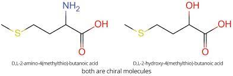
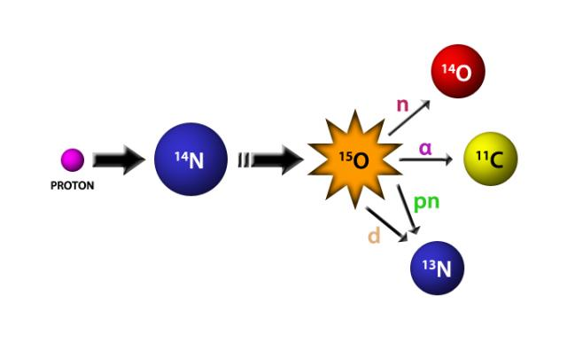

Vi-Jon
My first real job out of college was working for a personal care company called Vi-Jon. The majority of people will have not heard about this company, but they have likely used a Vi-Jon product without knowing it. Their name brand product is Germ-X. With the recent pandemic I'm sure most people have had a chance to use that! Vi-Jon also produces a number of "off label" products or name brand equivalent products. If you're ever shopping at Wal-Mart or Target and see a Great Value bottle of shampoo next to a name brand shampoo there's a good chance it's a Vi-Jon made product!
My first formulation that I worked on that made it to market was a green aloe vera gel that was sold to Meijers as an off brand to the name brand product. If you ever see these products on the shelf and think because they cost less they are not as good, that is not true! Us formulation chemist went through a great deal of work ensuring that they are as close as possible to the name brand product but you can buy it for cheaper!
Paetheon Biologics
My next stop was at a place called Paetheon Biologics at the time. These days Thermo Fisher owns and operates this facility. I worked in manufacturing at this job making buffers and media to suit production's needs. It wasn't the most exciting work, but it gave me the motivation to find my next home.
Novus International
Novus International is where I have spent the bulk of my professional career, clocking in at a little under 6 years. Novus is another company that likely nobody has heard of but they have unknowingly consumed one of their products in some way. Their main product, HMTBA, is a Monsanto legacy product that was sold to Mitsui & Co. and Nippon Soda which went on to form Novus as a company to manage those products. HMTBA is sold in either a liquid form, Alimet, or as a granular product, MHA.
What is HMTBA and why is it important? HMTBA (right) is the amino acid Methionine (left) but with the amino group (NH2) subsititued for a hydroxy group (OH). HMTBA is converted into methionine inside an animal and this process makes it more bioavailable than just supplementing with plain methionine. The methoinine industry worldwide is a multi-billion dollar industry. In most developed parts of the world, methionine supplementation is used in livestock feed to delivery a more efficient diet to livestock, thus reducing the amount of feed required during an animals life cycle.
At Novus I worked to develop products to meet the ever changing needs of the industry. I learned so many new things such as microencapsulation, enzyme assays, and HPLC. The biggest take away I had from Novus was learning to apply the scientific method to my work by using experimental design to arrive at conclusions and drive my projects forward.
Curium Pharma
I'm relatively new to Curium Pharma as of writing this. I just finished my second week! Curium is focused on what is called nuclear medicine. These are products that are used in PET scans and other imaging technologies to screen for cancer. Curium makes their products by using a cyclotron to bombard a metal target with protons to undergo a nuclear reaction and produce the radioisotopes needed for the imaging technologies to detect cancer.
